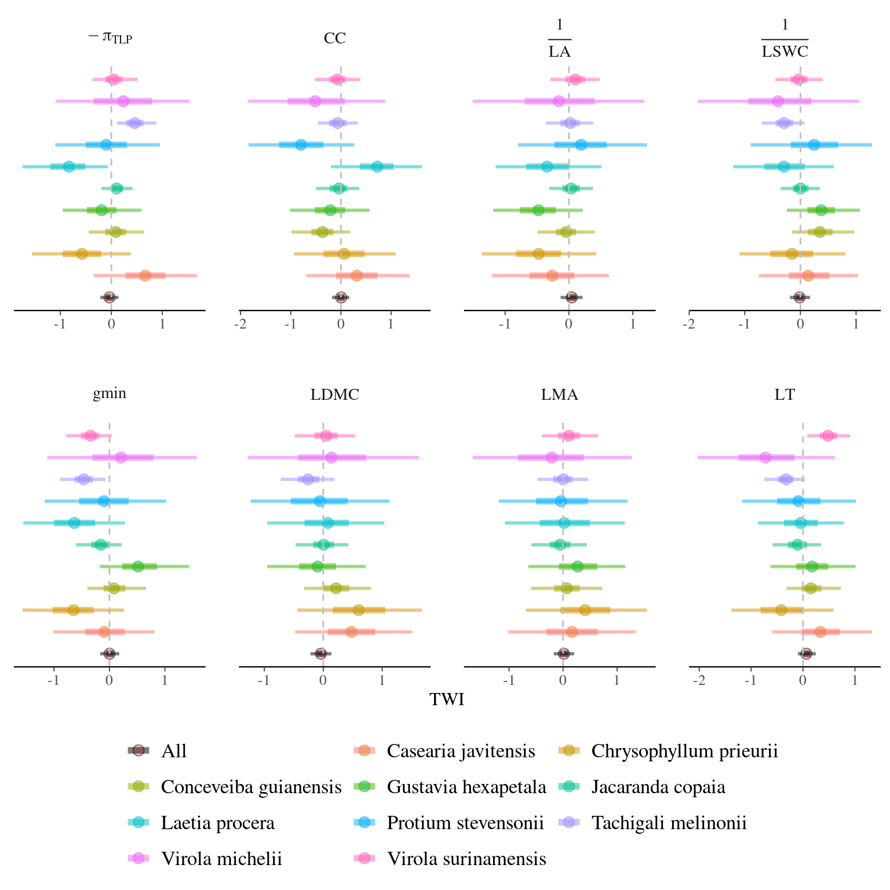
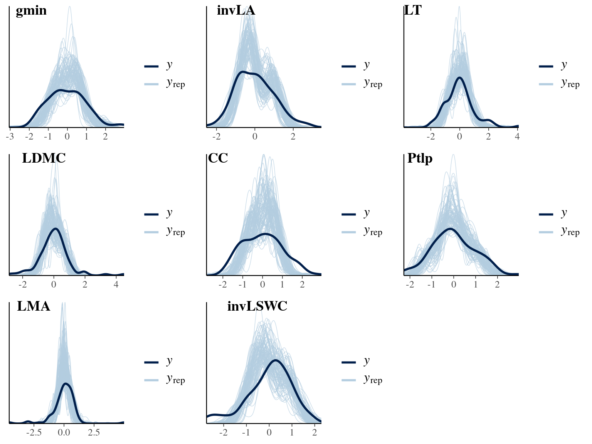

This book is in Open Review. I want your feedback to make the book better for you and other readers. To add your annotation, select some text and then click the on the pop-up menu. To see the annotations of others, click the in the upper right hand corner of the page
Chapter 6 Ontogeny and topography effects
The subsequent analysis aimed to explore variations in leaf traits according to 3 descriptors: (i) tree ontogeny, (ii) abiotic environment, and (iii) phylogeny through taxonomic levels.
6.1 Methods
We used the following model:
\[Y_{i,s} \sim \mathcal N((\alpha_s + \beta_{TWI,i} \times TWI_{i|s} + \gamma_{TWI} \times TWI_s) \times \frac{DBH_i}{\beta_{DBH,s} + DBH_i}), \sigma)\]
6.2 Results

Figure 6.1: Effect of TWI among and within species one leaf traits variation.
Sylvain:
- Our dataset is robust for estimating intra- vs inter-specific variability but lack power among (N=10) and within species (N=10), resulting in no significant effect of topography on leaf trait variation among and within species.
- Nevertheless, we observed as expected a significant variation of traits with ontogeny and size shown with DBH with no significant differences among species.
6.3 Discussion
6.4 SIs
6.4.1 Intercept

Figure 6.2: Model species effect for Intercept.
6.4.2 DBH

Figure 6.3: Model species effect for DBH slope.
6.4.3 Summary
| Trait | Species | \(\alpha_s\) | \(\beta_{DBH}\) | \(\beta_{TWI}\) | \(\gamma_{TWI}\) | \(\sigma^2\) |
|---|---|---|---|---|---|---|
| \(LMA\) | All | 0.016 | 0.997 | |||
| \(LMA\) | Casearia javitensis | 0.014 | 0.925 | 0.168 | ||
| \(LMA\) | Chrysophyllum prieurii | 0.445 | 0.728 | 0.408 | ||
| \(LMA\) | Conceveiba guianensis | -0.561 | 0.894 | 0.068 | ||
| \(LMA\) | Gustavia hexapetala | -0.439 | 0.960 | 0.271 | ||
| \(LMA\) | Jacaranda copaia | -0.286 | 0.974 | -0.053 | ||
| \(LMA\) | Laetia procera | 0.358 | 0.778 | 0.021 | ||
| \(LMA\) | Protium stevensonii | 0.562 | 0.755 | -0.037 | ||
| \(LMA\) | Tachigali melinonii | -0.686 | 0.643 | 0.004 | ||
| \(LMA\) | Virola michelii | -0.079 | 0.828 | -0.210 | ||
| \(LMA\) | Virola surimensis | 0.419 | 0.844 | 0.108 | ||
| \(LDMC\) | All | -0.040 | 0.915 | |||
| \(LDMC\) | Casearia javitensis | 1.078 | 0.698 | 0.478 | ||
| \(LDMC\) | Chrysophyllum prieurii | 0.181 | 0.787 | 0.602 | ||
| \(LDMC\) | Conceveiba guianensis | -0.550 | 0.904 | 0.217 | ||
| \(LDMC\) | Gustavia hexapetala | -0.830 | 0.853 | -0.095 | ||
| \(LDMC\) | Jacaranda copaia | -0.711 | 0.824 | 0.007 | ||
| \(LDMC\) | Laetia procera | 0.632 | 0.624 | 0.078 | ||
| \(LDMC\) | Protium stevensonii | 0.566 | 0.831 | -0.056 | ||
| \(LDMC\) | Tachigali melinonii | 0.855 | 0.837 | -0.258 | ||
| \(LDMC\) | Virola michelii | -0.206 | 0.859 | 0.139 | ||
| \(LDMC\) | Virola surimensis | -0.256 | 0.864 | 0.049 | ||
| \(LT\) | All | 0.064 | 0.786 | |||
| \(LT\) | Casearia javitensis | -1.273 | 0.628 | 0.333 | ||
| \(LT\) | Chrysophyllum prieurii | 0.248 | 0.861 | -0.419 | ||
| \(LT\) | Conceveiba guianensis | -0.595 | 0.897 | 0.150 | ||
| \(LT\) | Gustavia hexapetala | 0.161 | 1.022 | 0.176 | ||
| \(LT\) | Jacaranda copaia | 0.568 | 1.093 | -0.102 | ||
| \(LT\) | Laetia procera | 0.672 | 0.346 | -0.044 | ||
| \(LT\) | Protium stevensonii | 0.037 | 0.838 | -0.086 | ||
| \(LT\) | Tachigali melinonii | -1.282 | 0.588 | -0.326 | ||
| \(LT\) | Virola michelii | -0.897 | 0.626 | -0.723 | ||
| \(LT\) | Virola surimensis | 1.090 | 0.601 | 0.482 | ||
| \(\frac{1}{LA}\) | All | 0.045 | 0.707 | |||
| \(\frac{1}{LA}\) | Casearia javitensis | -0.708 | 0.800 | -0.261 | ||
| \(\frac{1}{LA}\) | Chrysophyllum prieurii | -1.059 | 0.669 | -0.473 | ||
| \(\frac{1}{LA}\) | Conceveiba guianensis | -1.416 | 0.624 | -0.044 | ||
| \(\frac{1}{LA}\) | Gustavia hexapetala | -0.629 | 0.908 | -0.478 | ||
| \(\frac{1}{LA}\) | Jacaranda copaia | 1.421 | 0.694 | 0.034 | ||
| \(\frac{1}{LA}\) | Laetia procera | -0.587 | 0.553 | -0.342 | ||
| \(\frac{1}{LA}\) | Protium stevensonii | 0.895 | 0.803 | 0.190 | ||
| \(\frac{1}{LA}\) | Tachigali melinonii | 1.490 | 0.994 | 0.020 | ||
| \(\frac{1}{LA}\) | Virola michelii | -0.265 | 0.850 | -0.158 | ||
| \(\frac{1}{LA}\) | Virola surimensis | -0.018 | 0.912 | 0.099 | ||
| \(CC\) | All | 0.005 | 0.832 | |||
| \(CC\) | Casearia javitensis | -0.530 | 0.888 | 0.317 | ||
| \(CC\) | Chrysophyllum prieurii | 0.955 | 0.754 | 0.063 | ||
| \(CC\) | Conceveiba guianensis | -0.381 | 0.971 | -0.368 | ||
| \(CC\) | Gustavia hexapetala | -0.936 | 0.787 | -0.211 | ||
| \(CC\) | Jacaranda copaia | 0.566 | 0.965 | -0.039 | ||
| \(CC\) | Laetia procera | 0.853 | 0.477 | 0.726 | ||
| \(CC\) | Protium stevensonii | -0.935 | 0.694 | -0.796 | ||
| \(CC\) | Tachigali melinonii | -1.033 | 0.761 | -0.065 | ||
| \(CC\) | Virola michelii | 0.544 | 0.778 | -0.514 | ||
| \(CC\) | Virola surimensis | 0.383 | 0.881 | -0.065 | ||
| \(\pi_{TLP}\) | All | -0.036 | 0.693 | |||
| \(\pi_{TLP}\) | Casearia javitensis | 0.256 | 0.902 | 0.664 | ||
| \(\pi_{TLP}\) | Chrysophyllum prieurii | 1.568 | 0.526 | -0.576 | ||
| \(\pi_{TLP}\) | Conceveiba guianensis | -0.018 | 1.044 | 0.088 | ||
| \(\pi_{TLP}\) | Gustavia hexapetala | 0.733 | 0.954 | -0.192 | ||
| \(\pi_{TLP}\) | Jacaranda copaia | -1.451 | 0.334 | 0.103 | ||
| \(\pi_{TLP}\) | Laetia procera | -0.100 | 0.698 | -0.831 | ||
| \(\pi_{TLP}\) | Protium stevensonii | 1.271 | 0.567 | -0.100 | ||
| \(\pi_{TLP}\) | Tachigali melinonii | 0.283 | 0.918 | 0.458 | ||
| \(\pi_{TLP}\) | Virola michelii | -0.622 | 0.852 | 0.236 | ||
| \(\pi_{TLP}\) | Virola surimensis | -0.592 | 0.879 | 0.041 | ||
| \(\frac{1}{LSWC}\) | All | -0.015 | 0.748 | |||
| \(\frac{1}{LSWC}\) | Casearia javitensis | 1.250 | 0.610 | 0.141 | ||
| \(\frac{1}{LSWC}\) | Chrysophyllum prieurii | 0.503 | 0.832 | -0.153 | ||
| \(\frac{1}{LSWC}\) | Conceveiba guianensis | -0.033 | 1.071 | 0.348 | ||
| \(\frac{1}{LSWC}\) | Gustavia hexapetala | -1.446 | 0.489 | 0.374 | ||
| \(\frac{1}{LSWC}\) | Jacaranda copaia | -0.890 | 0.574 | 0.001 | ||
| \(\frac{1}{LSWC}\) | Laetia procera | -0.538 | 0.822 | -0.296 | ||
| \(\frac{1}{LSWC}\) | Protium stevensonii | 1.328 | 0.669 | 0.247 | ||
| \(\frac{1}{LSWC}\) | Tachigali melinonii | 1.172 | 0.801 | -0.293 | ||
| \(\frac{1}{LSWC}\) | Virola michelii | -0.301 | 0.831 | -0.404 | ||
| \(\frac{1}{LSWC}\) | Virola surimensis | -0.192 | 0.912 | -0.030 | ||
| gmin | All | -0.009 | 0.773 | |||
| gmin | Casearia javitensis | -1.000 | 0.686 | -0.135 | ||
| gmin | Chrysophyllum prieurii | -1.233 | 0.631 | -0.364 | ||
| gmin | Conceveiba guianensis | -0.733 | 0.826 | 0.084 | ||
| gmin | Gustavia hexapetala | -0.451 | 0.897 | 0.567 | ||
| gmin | Jacaranda copaia | 0.639 | 0.978 | -0.180 | ||
| gmin | Laetia procera | 0.504 | 0.590 | -0.692 | ||
| gmin | Protium stevensonii | 1.616 | 0.604 | -0.305 | ||
| gmin | Tachigali melinonii | -0.049 | 0.854 | -0.498 | ||
| gmin | Virola michelii | 0.837 | 0.779 | 0.239 | ||
| gmin | Virola surimensis | -0.033 | 0.898 | -0.375 |
6.4.4 Check

